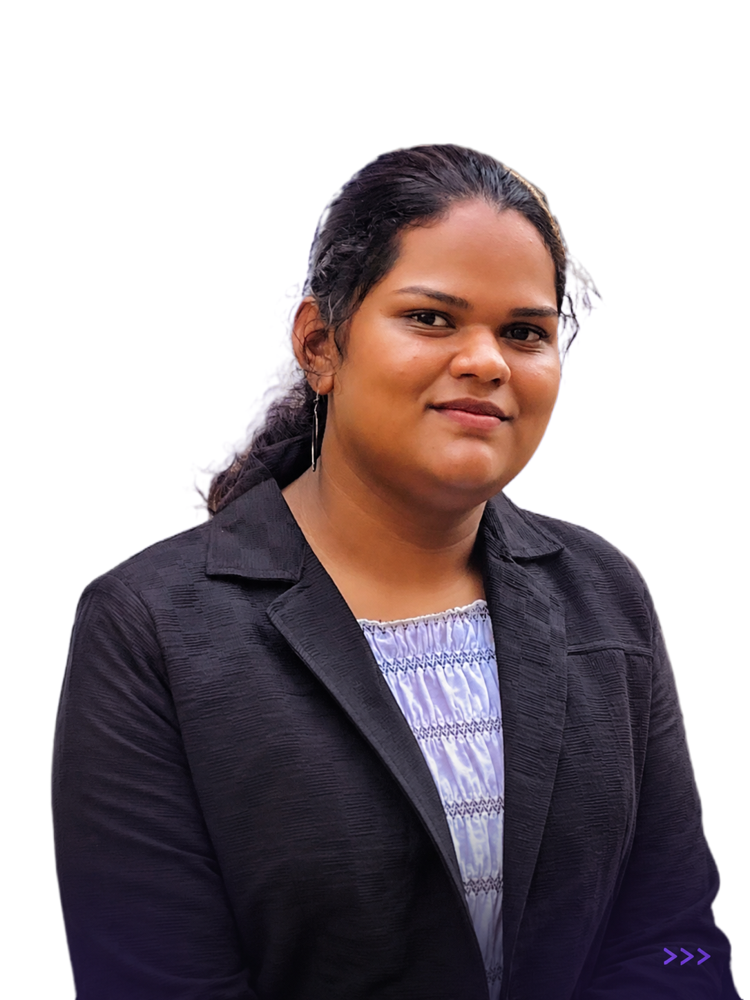
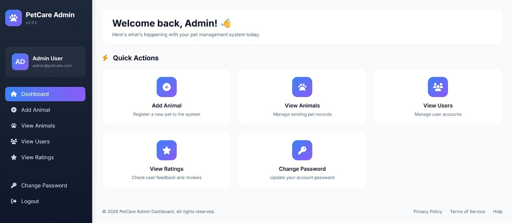

AI/ML Intern · ICT Academy of Kerala
Hands-on learning across Python, AI and machine learning workflows, supervised and unsupervised learning, neural networks, CNNs, NLP, LLMs and cloud deployment. Working toward an end-to-end ML capstone.
I turn curiosity into experiments and data into useful ideas. A Computer Science & Design graduate exploring machine learning, deep learning, NLP and intelligent applications — with a creative eye for user experience.

Analytical thinking, creative problem-solving and a willingness to keep learning.
I'm Ananthika D., a 2026 B.Tech graduate in Computer Science and Design from Vimal Jyothi Engineering College, Kannur. I aspire to work in AI/ML and data analytics, and enjoy exploring how intelligent systems can solve practical problems.
My learning spans the machine-learning workflow, from data preprocessing and feature engineering to model training and evaluation. I have also explored neural networks, CNNs, NLP, LLMs and application development through projects and training.
A growing set of technologies and methods practised through training, projects and coursework.
Working with data, scripts and analysis workflows.
Preparing data, training models and evaluating results.
Exploring neural network architectures and model training.
Learning modern language-model application patterns.
Developing and sharing lightweight applications.
Designing clear interfaces and interactive experiences.
Project highlights based on my academic and training experience.

Built an AI pipeline combining video and audio to classify four behavioural states and three emotional states. Used Inception V3 for video behaviour classification and Random Forest for audio emotion recognition.
EXPLORE PROJECT ↗
Created a playable 3D FPS game with player movement, shooting, health and scene-management systems. Implemented enemy AI using NavMesh pathfinding in C#.
EXPLORE GITHUB ↗Coursework project exploring text preprocessing and classification using TF-IDF, classical machine-learning models, cross-validation and a neural-network approach.
VIEW COURSEWORK REPOSITORY ↗Deep-learning practice with CIFAR image datasets, including CNN model training and transfer-learning experiments using neural-network frameworks.
VIEW COURSEWORK REPOSITORY ↗Machine-learning coursework using a heart-disease dataset, with data preprocessing, classification models and evaluation using suitable performance metrics.
VIEW COURSEWORK REPOSITORY ↗Hands-on learning across Python, AI and machine learning workflows, supervised and unsupervised learning, neural networks, CNNs, NLP, LLMs and cloud deployment. Working toward an end-to-end ML capstone.
Created responsive screen designs and interactive Figma prototypes for a live client project. Worked in a four-person team across sprints with developers and QA.
Vimal Jyothi Engineering College, Kannur · CGPA 6.99 / 10.
ICT Academy of Kerala
NIELIT Calicut with Vimal Jyothi Engineering College
Techmaghi
EMATIX
Nyeste Venture Technologies Pvt Ltd
Open to entry-level AI/ML, data analytics and related technology opportunities.